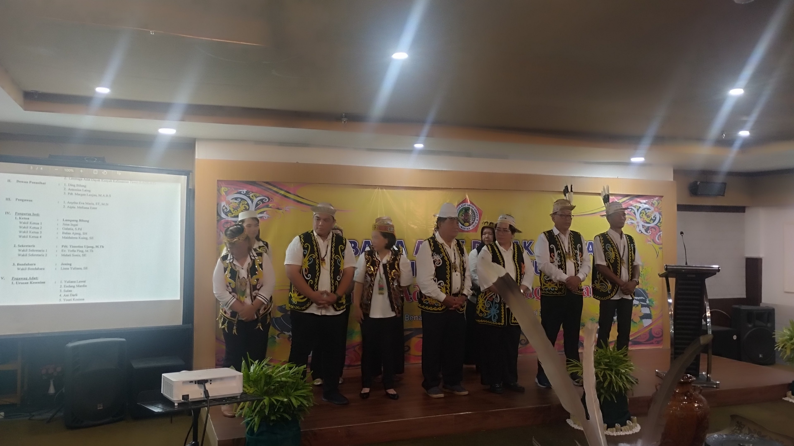

Apa itu OPK?
Objek Pemajuan Kebudayaan adalah unsur-unsur kebudayaan yang menjadi sasaran utama dalam upaya pelestarian, pengembangan, pemanfaatan, dan pembinaan kebudayaan sebagaimana diatur dalam Undang-Undang Nomor 5 Tahun 2017 tentang Pemajuan Kebudayaan.
Artinya, OPK merupakan segala bentuk budaya yang perlu dijaga, dikembangkan, dan diwariskan kepada generasi berikutnya.
Sepuluh Objek Pemajuan Kebudayaan (OPK) menurut UU No. 5 Tahun 2017 adalah sebagai berikut:
Daftar 10 Objek Pemajuan Kebudayaan
- Tradisi Lisan — Cerita rakyat, pantun, nyanyian rakyat.
- Manuskrip — Naskah kuno tulisan tangan yang menyimpan sejarah.
- Adat Istiadat — Kebiasaan sosial, tata cara, norma, dan hukum adat.
- Ritus — Upacara adat, ritual siklus hidup (perkawinan, kematian).
- Pengetahuan Tradisional — Resep makanan/minuman tradisional.
- Teknologi Tradisional — Alat pertanian, teknik membuat rumah adat, pakaian.
- Seni — Tari, musik, teater, seni rupa, seni sastra.
- Bahasa — Bahasa daerah, dialek, aksara tradisional.
- Permainan Rakyat — Permainan tradisional, permainan anak-anak.
- Olahraga Tradisional — Pencak silat, lompat batu, panahan tradisional.
Tepung Tawar
Prosesi Pelantikan Lembaga Adat Paser
Dalam prosesi pelantikan, Tepung Tawar dapat dilaksanakan setelah pengucapan sumpah/janji atau pengukuhan pengurus, sesuai tata urutan yang ditetapkan oleh pemangku adat.
Dalam konteks pelantikan Lembaga Adat Paser di Kota Balikpapan, Tepung Tawar dapat ditempatkan sebagai bagian dari prosesi adat yang menegaskan bahwa pelantikan bukan hanya kegiatan kelembagaan, tetapi juga merupakan momentum penerimaan amanah secara adat.
Tepung Tawar merupakan salah satu tradisi adat yang memiliki makna doa keselamatan, keberkahan, ketulusan dan penguatan amanah. Dalam prosesi pelantikan Lembaga Adat Paser di Kota Balikpapan, Tepung Tawar menjadi simbol diterimanya amanah oleh pengurus yang dilantik untuk menjalankan tugas dengan penuh tanggung jawab serta menjaga adat, budaya dan keharmonisan masyarakat Paser.
Pada saat Tepung Tawar, pemangku adat memberikan atau mengusapkan air Tepung Tawar kepada orang yang dilantik dengan gerakan dan tata cara yang telah diwariskan dalam adat.
Proses pelantikan dengan adat tambak pulut (tumpeng ketan 4 warna sakral Paser, yang dibawa oleh 4 budaya dilar Paser sebagai keberagaman).


Kegiatan Katuk Adat Ngan Alaq Tawai
Nasihat Adat dan Pemulihan Semangat Adat Dayak Kenyah
Prosesi Katuk Adat Ngan Alaq Tawai
Katuk Adat Ngan Alaq Tawai merupakan salah satu bentuk kegiatan adat yang dilaksanakan oleh masyarakat Dayak sebagai sarana mempererat hubungan keberadaan, menjaga nilai-nilai adat, serta memperkuat kebersamaan masyarakat.
Katuk Adat Ngan Alaq Tawai merupakan salah satu kegiatan adat masyarakat Dayak yang menjadi ruang untuk mempererat tali kekeluargaan, kebersamaan dan hubungan sosial masyarakat adat. Di Kota Balikpapan, kegiatan ini memiliki arti penting sebagai bagian dari upaya Lembaga Adat Dayak dalam menjaga keberlanjutan adat istiadat, seni, bahasa, nilai-nilai budaya dan pengenalan tradisional.



Gebyar Seni & Halal Bi Halal
Bantengan Lembu Ireng, Kudo Menggolo, Wijayo Mukti, Singo Menggolo